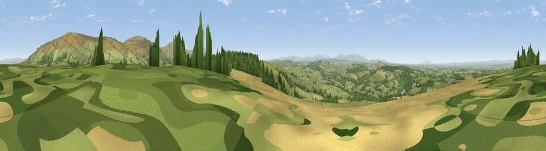

Viewpoint near Cumrew
#4297 in England · top 15% of its area beats it · near CumrewThe view, rendered

A 360° render of this exact spot computed from the terrain model, tree cover and land cover — summer colours, afternoon light, calibrated against photographs of famous viewpoints. Real trees, hedges and buildings will differ in detail.
The panorama
Grey silhouette: terrain skyline in each direction (720 bearings, Earth curvature and refraction included). Dashed green: skyline with trees (+15 m) and buildings (+8 m) as obstacles. Blue strip: how far the ground is visible on each bearing.
Where the view opens
Wedge length = distance to the farthest visible ground on that bearing (vegetation-aware). Rings at 10, 25 and 50 km.
What fills the view
62% grassland · 22% cropland · 15% woodland ·
Angular shares of the visible panorama (visual magnitude), not map area. Landscape diversity 0.42 (0–1 Shannon).
Key numbers
More beautiful places nearby
The staircase of upgrades: each row has a higher view potential than everything closer. Driving times are estimates from straight-line distance, calibrated against real road routing — check an actual route before setting out.
| Place | Direction | Drive | Score |
|---|---|---|---|
| Viewpoint near Ainstable | S · 1 km | ~4 min | 72.8 |
| Viewpoint near Cumrew | NE · 3 km | ~8 min | 78.8 |
| Barrock Fell | WSW · 7 km | ~15 min | 81.1 |
| Viewpoint near Watermillock | SSW · 29 km | ~46 min | 82.6 |
| Viewpoint near Watermillock | SSW · 30 km | ~47 min | 83.5 |
| Skiddaw South Top | SW · 34 km | ~52 min | 85.8 |
| Viewpoint near Applethwaite | SW · 35 km | ~54 min | 86.7 |
| Long Side | SW · 36 km | ~54 min | 89.5 |
54.83882, -2.72670 · source: screening · position refined by local search. Computed location — check access rights before visiting.